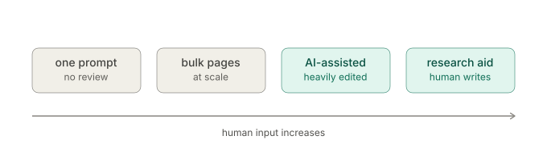
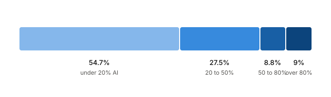
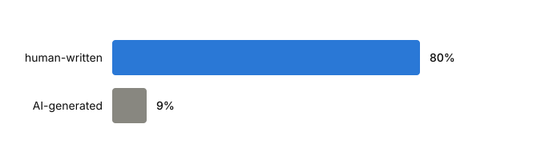
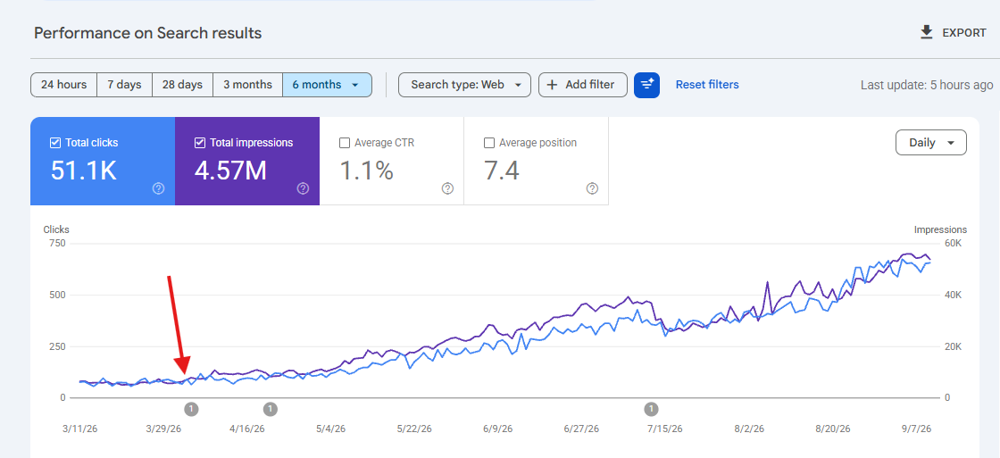

"AI content can't rank on Google." The argument goes that Google values originality, expertise and firsthand experience, so anything written with AI falls short.
Google's own guidance says otherwise. It focuses on quality and usefulness regardless of how content is produced. Using AI does not disqualify a page.
The useful question is not whether AI content can rank. It is which AI content ranks, and which collapses. This study looks at three public datasets and my own results.
Key Findings at a Glance
- 5.3% of pages ranking in Google positions 1 to 3 were scored as fully AI-generated, with another 9% at 80% or above (Ahrefs, 331,000 pages, July 2026).
- Human-written content held position 1 about 80% of the time; purely AI-classified content held it 9% of the time (Semrush, 42,000 posts, April 2026).
- Six AI-assisted articles on an established domain earned roughly 555,000 impressions and 2,300+ clicks, with one reaching position 1 (SE Ranking).
- 2,000 unedited AI articles on 20 new domains indexed at 71% within 36 days, then collapsed from 28% to 3% of pages in the top 100 by month three (SE Ranking).
- 54% of sites named in AI content platform case studies lost 30% or more of peak organic traffic (Lily Ray, 220+ sites, May 2026).
- Google's January 2025 rater guidelines apply the Lowest rating to AI content produced with "little to no effort, little to no originality" — the qualifier, not the AI, is the trigger.
Why I Ran This Study
I have worked in SEO for three years. My first job was as an SEO writer, and we used AI then too.
Not the way people picture it now. No chat window producing 3,000 words while you made coffee. It was outline generators, paraphrasing tools, a term list down the side of the editor, and an intro I rewrote every time because it always opened with "In today's fast-paced world."
The tools were worse. The argument was identical. Half the industry called it cheating and the other half was quietly shipping it.
I have written things entirely by hand that went nowhere. I have published AI-assisted pieces that held traffic for over a year. And I once spent an afternoon pushing a page from a content score of 62 up to 91, then watched it sit at position 40 for the next six months, which taught me more than either of the other two put together. So I stopped reading takes on this and went looking for numbers.
What Counts as AI Content
"AI content" is doing far too much work as a phrase, and most arguments about it turn out to be two people defending different things.

At one end there is one prompt in, one article out, published without anyone reading it. Next to that sits bulk generation, where you build a template and swap a keyword into it a thousand times. Then there is AI-assisted drafting, where a person picks the angle, feeds in the material and edits hard while the model handles structure and first-pass prose. At the far end, AI barely touches the writing and just does research, fact checks and cleanup. The studies below pull those apart, which is the genuinely useful bit.
What Google Actually Says About AI Content
Google's position, stated across three documents in three years: it does not care how a page was produced, it cares whether the page adds anything.
The 2023 line is the one everyone quotes: Google focuses on the quality of content, not how content is produced. That has never been walked back, and it is still what Google says. The trouble is that most people stop reading there, and a fair amount has been published since.
In March 2024 Google renamed "spammy automatically generated content" to scaled content abuse. It covers generating a lot of pages mainly to manipulate rankings instead of helping anyone, and it applies regardless of how those pages were made, whether that is AI, a person, a template or scraped text. The method-neutrality is deliberate.
In January 2025 the Search Quality Rater Guidelines were updated with a section everyone misquotes. Raters were told to give a Lowest rating to pages where the main content is copied, paraphrased, or AI generated with "little to no effort, little to no originality." John Mueller confirmed it at Search Central Live in Madrid.
Read the qualifier, because it is the whole clause. What triggers the rating is AI plus no effort, and a page that has been AI-drafted and then fact-checked, restructured and filled with things only you would know does not fit that description at all. A page one prompt deep fits it perfectly.
Ahrefs: 331,000 Pages in the Top 10
Ahrefs pulled a million pages from the top 10 of 100,000 SERPs and ran them through its own AI content detector. Of pages ranking in positions 1 to 3, 5.3% scored as 100% AI-generated and another 9% scored 80% or above. Pages under 50% AI took 82.2% of top-3 rankings. Average AI level barely moves down the page, from 27.1% at position 1 to 30.9% at position 10.

Indexation was lower for AI-heavy pages but nothing like blocked, at 40.35% for the highest bucket against 49.28% for the lowest, which still leaves four in ten getting indexed.
The sharpest gap is impressions. Low and moderate AI pages pulled two to three times the impressions of high-AI pages, and over time those high-AI pages did not fall off a cliff so much as never climb, with impressions staying flat and low throughout.
Ryan Law, who ran the study, reads the whole thing as a gradient instead of a switch. His argument is that performance gets worse as AI use goes up because quality tends to go down as AI use goes up, and that no classifier is filtering anything out. That is a different claim from "Google penalises AI", and the difference between them is the bit you can actually do something about.
Semrush: 42,000 Posts and 224 SEOs
Semrush analysed 20,000 keywords and 42,000 blog pages classified with GPTZero, alongside a survey of 224 SEO professionals.
Human-written content held position 1 about 80% of the time. Purely AI-classified content held it 9% of the time. Human content led at every position in the top 10, with the widest gap at the top.

One caveat the study is fairly upfront about: this is a detector's opinion, not a record of how pages were made. Detectors flag heavily edited human writing as AI often enough that no single classification is reliable. Across 42,000 pages the direction is probably right, but the headline rests on a tool that would flag some hand-written drafts.
The survey half is more telling. 72% of SEO teams said AI-assisted content ranks at least as well as human content. 87% said their own content is fully or mostly human-led. 70% named speed as the main benefit, and only 19% said AI improved quality.
Read together: AI is a speed tool, most teams keep it on a short leash, and position 1 still goes to work that reads like a person wrote it.
SE Ranking: Two Experiments Over 16 Months
This is the closest thing to a controlled test I found, and the reason I think "does AI content rank" is the wrong question to be asking. The first experiment was six AI-assisted articles on SE Ranking's established domain, human-edited before publishing. Over about a year they pulled roughly 555,000 impressions and 2,300+ clicks. Three of the six reached the organic top 10. Five triggered AI Overviews and four were cited as sources. The best performer hit position 1 with 197,373 impressions and 1,661 clicks.
Worth noting the spread inside that. One of the six managed 7,571 impressions and five clicks. Editing does not rescue a piece nobody needed.
The second was 20 brand-new domains with 100 one-click AI articles each. Two thousand articles, no editing, no links, no updates, nothing.
Month one looked like a win. Around 71% of pages indexed within 36 days, 122,000+ impressions, 244 clicks, and 80% of sites ranking for at least 100 keywords. By two and a half months impressions passed 526,000. Then around month three, pages in the top 100 dropped from 28% to 3%. Sixteen months later most of those sites had not recovered.

Same technology, same window, two completely different endings. The variables that changed between them were editing, an aged domain, and whether anything original went in.
Why Scaled AI Content Collapses
Lily Ray tracked 220+ sites that AI content platforms had publicly named as customers in their own case studies. Published May 2026: 54% lost 30% or more of peak organic traffic, 39% lost half or more, 22% lost three quarters or more.
Her phrase for it is "it works, until it doesn't". Glenn Gabe calls the traffic shape Mount AI. Steep climb, a peak around three to six months, then a drop often ending below where the site started. He has also documented sites losing their ChatGPT citations after losing Google rankings, since the LLMs ground their answers in search results, so the damage does not stay contained to one channel.

Dan Taylor at SALT.agency gives the mechanical explanation. Google burst-crawls a large new batch of pages out of curiosity. If the domain lacks the authority to justify that spend, Google throttles crawl budget and the pages go. Getting indexed is not the same as staying indexed, and many case studies get published inside the window between the two.
Both Ray and Taylor are careful about causation, and that caution is worth keeping. These are correlations across sites that were usually doing several risky things at once, and traffic drops have plenty of other explanations. The shape repeats often enough to be worth treating as a real risk anyway.
Are SEO Writing Tools Still Worth Paying For?
The category has effectively split in two, and the published testing on each half points in different directions.
Research and data tools sit on one side. Keyword data, SERP analysis, intent breakdowns, content gap reports, rank tracking, and now citation tracking in AI answers. None of that comes out of a chat window, and it is what determines whether an AI-assisted article is worth anything before a word gets written.
All-in-one AI writing platforms sit on the other. Mateusz Makosiewicz at Ahrefs generated 40 articles testing them and concluded that "writing was never the hard part." His criticisms are mechanical rather than aesthetic: these tools research by scraping whatever already ranks, which launders errors through consensus, so if three wrong pages agree on a number it becomes a fact. They attempt to one-shot a whole article when voice usually takes five or six rounds. They cannot hold fifteen or twenty reference files at once. And several charge more than the raw model while running an older version of it.
Content scoring tools sit awkwardly between the two. An Originality.ai study put Surfer's content score at around 26% correlation with rankings and Clearscope's at around 17.5%. Both companies cite that study, which tells you something. Neither figure is nothing, and neither makes a score a ranking factor. A score measures vocabulary overlap with pages that already rank, which is a different question from whether your page adds anything.
Makosiewicz's alternative is to build the reference material before writing: product details, customer questions, real numbers, screenshots, notes from calls. His rule of thumb is that in a four-week content project, three weeks belong in the source files.
What My Own Results Show

What I expect this to show, based on the pattern so far: the pieces that held rankings all contained something not available anywhere else on the SERP. The ones that faded were where I let a draft stay generic because it read fine and I was behind schedule.
What Separates AI Content That Ranks
Pulling the studies and my own results together, the pages that keep ranking share a short list of traits, and not one of them is about the drafting method.
Someone who knew the topic picked the angle before any generating started. The page has at least one thing on it that is not already sitting on that SERP, whether that is your own data, a customer's exact wording, a photo you took or a price you verified yourself. A human checked the facts, especially any the model supplied. The site already had some trust behind it instead of being three weeks old. And the publishing pace was one a person could realistically keep reviewing.
The sites that collapse invert all of that. Volume decided first, angle second, nothing original in the pages, nobody checking, usually on a new domain.
Frequently Asked Questions
Can AI-Generated Content Rank on Google?
Yes. Ahrefs found 5.3% of pages in positions 1 to 3 scored as fully AI-generated, with another 9% at 80% or above. Google's guidance states it evaluates quality rather than production method. Ranking is possible; ranking reliably depends on what the content contains.
Does Google Penalise AI Content?
Not for being AI. Google's March 2024 scaled content abuse policy targets mass-producing pages to manipulate rankings, regardless of whether humans or machines made them. The January 2025 rater guidelines apply the Lowest rating to AI content made with little effort and little originality, which is a description of effort, not of tooling.
Why Does AI Content Stop Ranking After a Few Months?
The pattern Glenn Gabe calls Mount AI shows a climb, a peak around three to six months, then a fall often ending below the starting point. Dan Taylor's explanation is crawl economics: Google burst-crawls a big new batch of pages, and throttles the crawl budget when the domain lacks authority to justify it.
Is AI-Assisted Content Different From AI-Generated Content?
The data says yes. In SE Ranking's experiments, six human-edited AI articles on an established domain earned roughly 555,000 impressions and 2,300+ clicks, while 2,000 unedited AI articles on new domains collapsed from 28% to 3% of pages in the top 100 by month three. Same technology, same period, opposite results.
Are AI Writing Tools Worth It for SEO?
Research and data tools remain valuable. All-in-one writing platforms are harder to justify, since they research by scraping what already ranks and often cost more than the underlying model. Content scoring tools correlate with rankings at around 26% (Surfer) and 17.5% (Clearscope) in Originality.ai's study, which makes them a check rather than a target.
Conclusion on AI Content Ranking
AI content can rank. Ahrefs found fully AI-generated pages in positions 1 to 3. SE Ranking got 555,000 impressions and a position 1 from six AI-assisted articles. Google has said three separate times that it does not care how a page was made.
But that was never the question. The question is whether your AI content will rank, and that depends on what you put into it. Semrush's data says human-led writing still owns the top of page one. Lily Ray's 220 sites say scale without substance has a predictable ending. Both can be true at the same time, which is inconvenient but survivable.
What AI took away was the excuse about not having time to publish. It did not do anything about needing to know something first.
Sources
- Google, Google Search's guidance about AI-generated content (February 2023)
- Google, Spam policies for Google web search
- Google, What web creators should know about the March 2024 core update and new spam policies
- Search Engine Land, Google quality raters now assess whether content is AI-generated
- Ryan Law and Xibeijia Guan, Ahrefs, Google Doesn't Punish AI Content; It Punishes Bad Content (331k Pages Studied) (July 2026)
- Semrush, Does AI content rank well in search? Survey + data study (April 2026)
- Search Engine Land, Human content is 8x more likely than AI to rank #1 on Google
- SE Ranking, How AI-generated content performs in search
- Search Engine Land, How AI-generated content performs in Google Search: A 16-month experiment
- Lily Ray, It Works Until It Doesn't: AI Content Strategies That Backfire (May 2026)
- Glenn Gabe, When "Mt. AI" crumbles, ChatGPT can follow
- Dan Taylor, Search Engine Journal, Why Scaled AI Content Fails: Google's Crawl Economics Explained
- Mateusz Makosiewicz, Ahrefs, What AI Writing Tools Get Wrong (And The Stack I Use Instead) (March 2026)